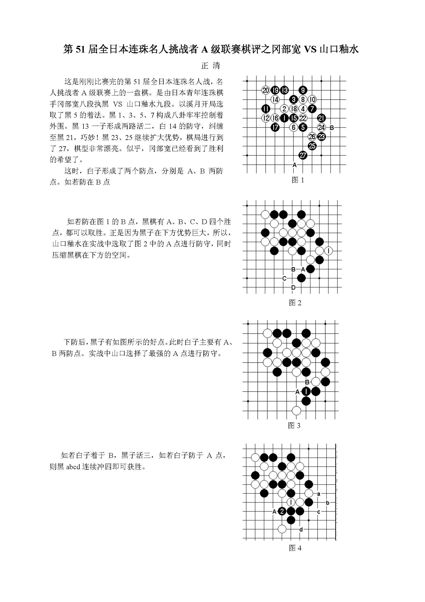
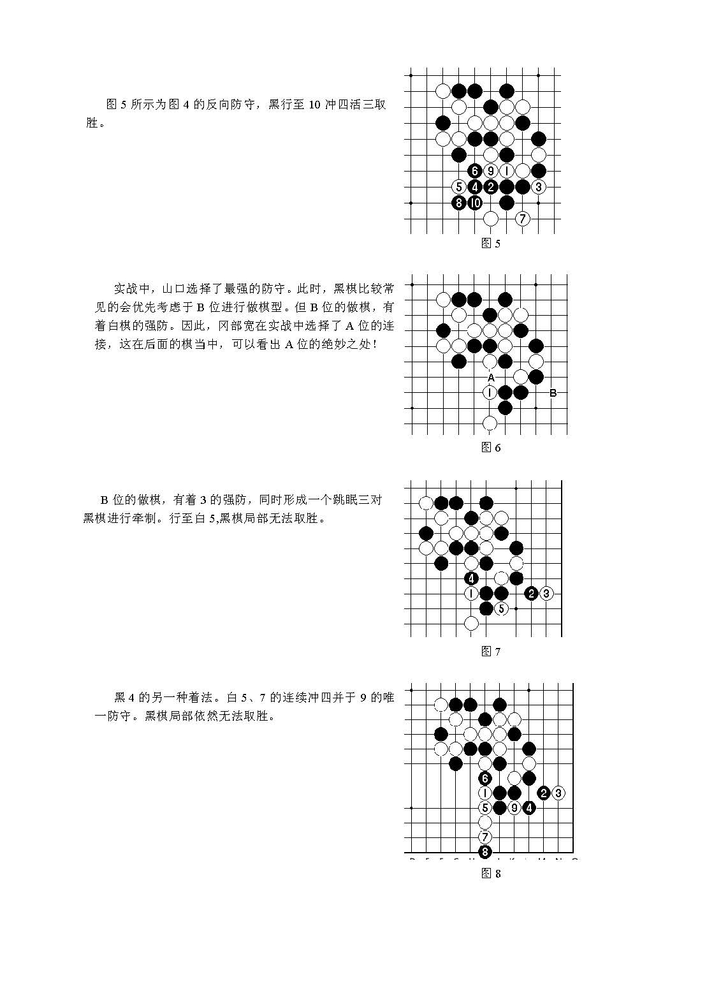
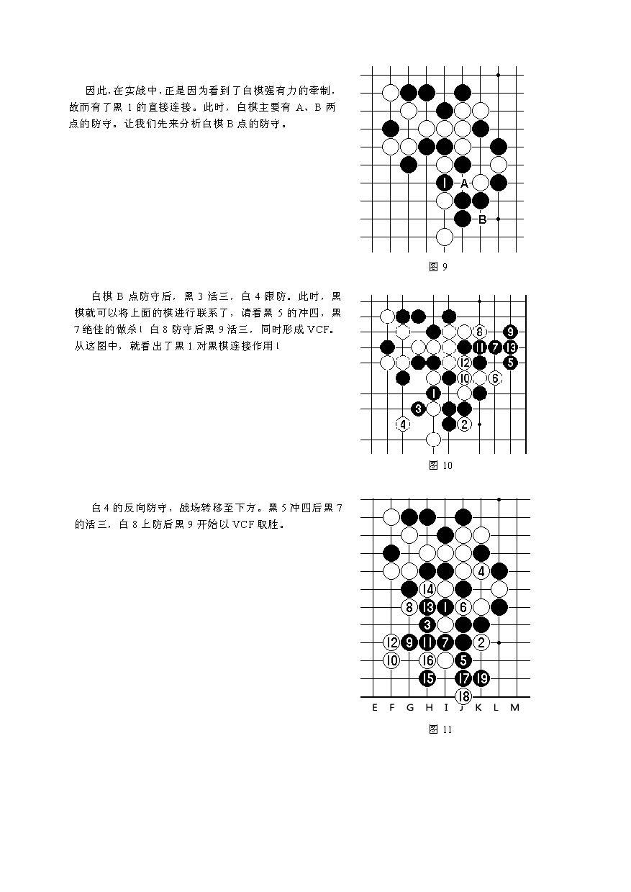
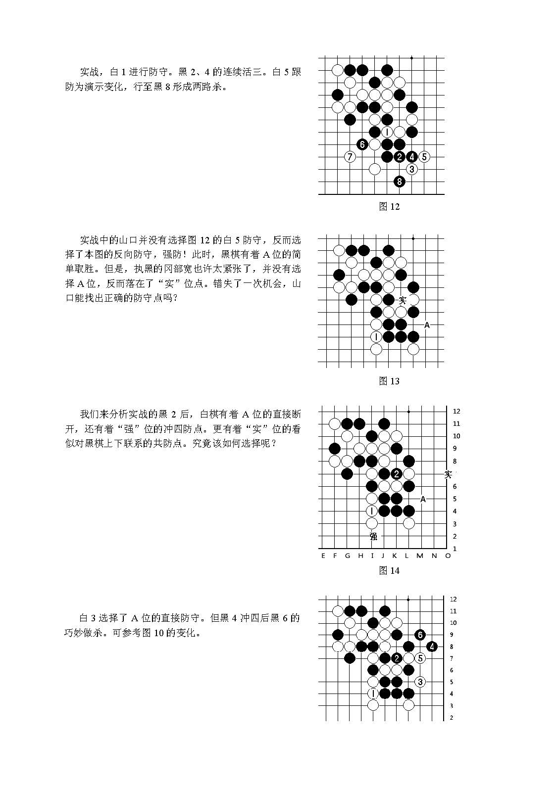
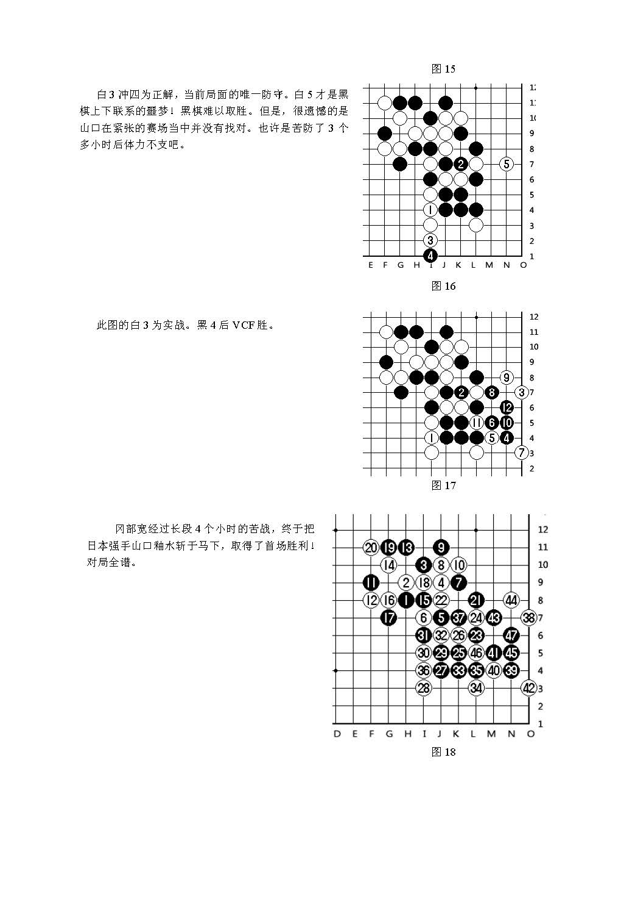

这是刚刚比赛完的第51届全日本连珠名人战，名人挑战者A级联赛上的一盘棋。是由日本青年连珠棋手冈部宽八段执黑VS山口釉水九段。
     以上，可以通过链接：http://pan.baidu.com/share/link?shareid=3309196015&uk=1057329396 对该篇棋评进行下载，为PDF档。这是我第一次试着做的文档，给点鼓励哦。
［此帖子已被 yidefei 在 2013-9-18 16:05:29 编辑过］
［ 无尽 于 2013-9-18 18:21:17 时奖励此帖[金币加 100 威望加1］
［ 屏蔽同学于 2013-9-18 18:50:17 时花20金币送鲜花一朵］
［ 屏蔽同学于 2013-9-18 18:50:17 时花20金币送鲜花一朵］
［ 踵酃同学于 2013-9-19 5:07:03 时花20金币送鲜花一朵］